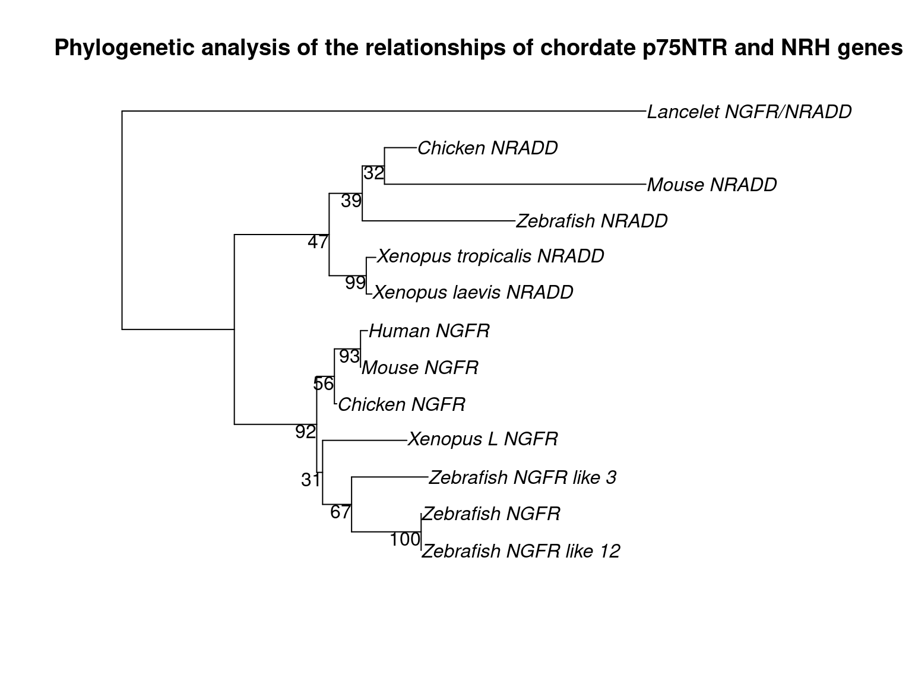

suppressPackageStartupMessages({
## Common
library(tidyverse)
library(magrittr)
library(future.apply)
library(here)
library(AnnotationHub)
library(purrr)
library(scales)
library(kableExtra)
library(tictoc)
library(ggrepel)
library(RColorBrewer)
library(ggpubr)
library(pander)
library(rmarkdown)
## Project specific
library(rentrez)
library(msa)
library(phangorn)
})if (interactive()) setwd(here::here())
theme_set(theme_bw())
cores <- availableCores() - 1Metadata was supplied by Tanya (Table 1 of Additional file 1) containing NCBI accessions of nucleotide and protein sequences that were to be phylogenetically analysed. This data was setup in R as a tibble to allow for easy access of the information.
meta <- tribble(
~description, ~nuc_accession, ~prot_accession,
"Zebrafish NGFR", "NM_001198660.1", "NP_001185589.1",
"Zebrafish NGFR like 12", "XM_003199576.1", "XP_003199624.1",
"Zebrafish NGFR like 3", "XM_003198085.3", "XP_003198133.1",
"Zebrafish NRADD", "XM_695893.4", "XP_700985.3",
"Xenopus tropicalis NRADD", "NM_001007998.2", "NP_001007999.2",
"Xenopus L NGFR", "NM_001088466.1", "NP_001081935.1",
"Xenopus laevis NRADD", "NM_001091773.1", "NP_001085242.1",
"Mouse NGFR", "NM_033217.3", "NP_150086.2",
"Mouse NRADD", "NM_026012.2", "NP_080288.1",
"Chicken NGFR", "NM_001146133.1", "NP_001139605.1",
"Chicken NRADD", "XM_418509.3", "XP_418509.3",
"Human NGFR", "NM_002507.3", "p08138",
"Lancelet NGFR/NRADD", "XM_002588230.1", "XP_002588276.1"
)
meta %>%
kable(
align = "l",
caption = "Metadata"
) %>%
kable_styling(
bootstrap_options = c("striped", "hover", "condensed", "responsive")
)| description | nuc_accession | prot_accession |
|---|---|---|
| Zebrafish NGFR | NM_001198660.1 | NP_001185589.1 |
| Zebrafish NGFR like 12 | XM_003199576.1 | XP_003199624.1 |
| Zebrafish NGFR like 3 | XM_003198085.3 | XP_003198133.1 |
| Zebrafish NRADD | XM_695893.4 | XP_700985.3 |
| Xenopus tropicalis NRADD | NM_001007998.2 | NP_001007999.2 |
| Xenopus L NGFR | NM_001088466.1 | NP_001081935.1 |
| Xenopus laevis NRADD | NM_001091773.1 | NP_001085242.1 |
| Mouse NGFR | NM_033217.3 | NP_150086.2 |
| Mouse NRADD | NM_026012.2 | NP_080288.1 |
| Chicken NGFR | NM_001146133.1 | NP_001139605.1 |
| Chicken NRADD | XM_418509.3 | XP_418509.3 |
| Human NGFR | NM_002507.3 | p08138 |
| Lancelet NGFR/NRADD | XM_002588230.1 | XP_002588276.1 |
Protein sequences for the provided accessions were obtained in FASTA format from the NCBI protein database using the rentrez package. Some manual cleaning was also performed in this step to shorten and rename the FASTA headers, as long headers were found to cause errors in downstream software.
proteins <- entrez_fetch(
db = "protein",
id = meta$prot_accession,
rettype = "fasta"
) %>%
str_split(pattern = "\\n") %>%
unlist() %>%
vapply(function(line){
if (str_detect(line, "^>")) {
str_split(line, " ") %>%
unlist() %>%
.[1]
} else {
line
}
}, FUN.VALUE = character(1), USE.NAMES = FALSE) %>%
.[. != ""]
proteins[proteins == ">sp|P08138.1|TNR16_HUMAN"] <- ">p08138"
proteins <- vapply(proteins, function(line){
acc <- str_remove(line, ">")
if (acc %in% meta$prot_accession) {
paste0(">", meta$description[meta$prot_accession == acc])
} else {
line
}
}, FUN.VALUE = character(1), USE.NAMES = FALSE)The resulting FASTA file proteins.fasta was saved locally, ready for multiple sequence alignment.
write_lines(proteins, here("data/proteins.fasta"))Multiple sequence alignment was performed using the Clustal Omega algorithm implemented in the msa package. The resulting alignment was proteins_msa.fasta was saved for use with Gblocks software. A summarised version of the alignment can be seen printed below.
sequences <- readAAStringSet(here("data/proteins.fasta"))
aln <- msa(sequences, method = "ClustalOmega")aln## ClustalOmega 1.2.0
##
## Call:
## msa(sequences, method = "ClustalOmega")
##
## MsaAAMultipleAlignment with 13 rows and 2001 columns
## aln names
## [1] MASNTAGRTRSGDPRDRQAGNSANS...QALRAIGRQDVIGLLQECNMGRHLV Lancelet NGFR/NRADD
## [2] -------------------------...TALRKIQRDDIAQSLNSDSTATSPV Xenopus L NGFR
## [3] -------------------------...VALRKIQRGDIAESLYSESTATSPV Chicken NGFR
## [4] -------------------------...AALRRIQRADIVESLCSESTATSPV Mouse NGFR
## [5] -------------------------...AALRRIQRADLVESLCSESTATSPV Human NGFR
## [6] -------------------------...TALKKINREDIAQSIIVKPTATSAV Zebrafish NGFR
## [7] -------------------------...TALKKINREDIAQSIIVKPTATSSV Zebrafish NGFR li...
## [8] -------------------------...------------------------- Zebrafish NGFR li...
## [9] -------------------------...DALAAIGREDVVQVLSSPAESSSVV Mouse NRADD
## [10] -------------------------...SALTRIERPDIITALTAPTQGVSVV Zebrafish NRADD
## [11] -------------------------...RALAAMGRQDVAECLAGPGDASSVV Chicken NRADD
## [12] -------------------------...AALVNMERADVVENLNSTNDGSSVV Xenopus tropicali...
## [13] -------------------------...AALVNMERADVVENLNSANDASSVV Xenopus laevis NRADD
## Con -------------------------...?AL??I?R?D????L?S???A?S?V ConsensusFor better visualisation purposes, the complete alignment was saved in PDF format to file msa.pdf.
msaPrettyPrint(aln, output = "pdf", showLogo = "none", showConsensus = "none",
file = here("figures/msa.pdf"),
alFile = here("data/proteins_msa.fasta"),
askForOverwrite = FALSE)
## PDF doesnt seem to output to correct folder, move manually instead
file.rename(here("msa.pdf"), here("figures/msa.pdf"))Gblocks software was used to eliminate poorly aligned positions and divergent regions of the multiple protein sequence alignment. Gblocks was run from the command line with the following relaxed parameters for less stringent selection as recommended for short alignments:
The resulting alignment file proteins_msa.fasta-gb was output by the software for further phylogenetic analysis. A visualisation of the Gblocks selection process was also output in the file proteins_msa.fasta-gb.htm.
Phylogenetic analysis was performed using the phangorn package. Firstly, the alignment produced by Gblocks was loaded as a phyDat object.
phyDat <- read.phyDat(here("data/proteins_msa.fasta-gb"), format = "fasta", type = "AA")phangorn provides a number of different protein models for computing likelihood which can be tested with the modelTest() function.
mt <- modelTest(phyDat, model = "all")
env <- attr(mt, "env")
fitStart <- eval(get(mt$Model[which.min(mt$BIC)], env), env)JTT was chosen as the most appropriate model for the data. The model was then optimised using optim.pml() which allows for tree rearrangements.
fit <- optim.pml(fitStart, optGamma = TRUE, rearrangement = "ratchet")Lastly, bootstrapping was applied to test how well the edges of the tree were supported.
set.seed(210914)
bs <- bootstrap.pml(fit, bs=100, optNni = TRUE)plotBS(midpoint(fit$tree), bs, type = "phylogram",
main = "Phylogenetic analysis of the relationships of chordate p75NTR and NRH genes")